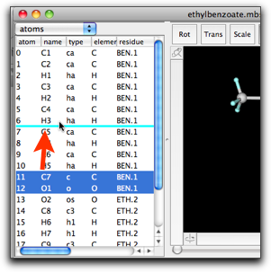
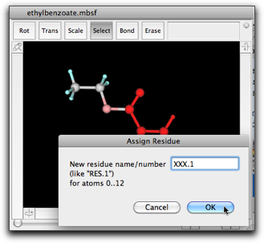

第五段階：分子を編集する：属性テーブルを使う
1. 分子の属性テーブル
分子はいろいろな属性を持っています。まず原子と結合があります。原子は名前、原子タイプ、元素、原子量（元素が決まれば決まる）、電荷、座標、など。また、生化学の習慣に従い、原子は「残基」でグループ化されています。分子はまた、分子力学のパラメータを持っています。Molby はまた量子化学計算も部分的にサポートします。それと関連して、分子に分子軌道係数などの情報を持たせることができます。
これらの情報の多くは「属性テーブル」で見ることができます。属性テーブルは、分子モデルのウィンドウの左半分にあります。

図では、テーブルは原子の属性を表示しています。名前、原子タイプ、元素、残基名と残基番号、座標、部分電荷です。これらの属性はダブルクリックして編集することができます。

リターン（エンター）またはタブキーを押すと、編集した値は確定され、別のセルが編集状態になります。リターン、シフト＋リターン、タブ、シフト＋タブでそれぞれ下・上・右・左のセルに移動します。編集を終了したい時は、オプション（Windows では Alt）＋リターンを使ってください。
いくつか注意点があります。
(1) 原子のインデックス（一番左の列）は編集できません。原子の順序を変えたい時は、下の図にあるように「ドラッグ・アンド・ドロップ」操作を使ってください。

(2) 残基の列には、残基の名前と残基番号がピリオドでつないで表示されています。このセルを編集すると、妙なことが起きて驚くかもしれません。たとえば、原子０の残基名を "RES" から "XXX" に変えると、残基番号が "1" であるすべての原子の残基名が "XXX" に変わります。

この挙動は、すべての残基名と残基番号は統一されていなければならない、という原理によります。つまり、同じ残基番号を持つ原子の残基名は同じでなければなりません。時にはこの挙動が便利に使えますが、混乱を招くことも多くあります。
残基名と残基番号を変更するお勧めの方法は、変更したい原子を選択して "Script" メニューの "Assign Residue..." コマンドを使うことです。

2. Bond/Angle/Dihedral/Improper テーブル
属性テーブルは他の情報も表示することができます。テーブルの種類はポップアップメニューで選択できます。

Bond, angle, dihedral, improper テーブルは、それぞれ結合・結合角・二面角・improper 二面角の構成原子のインデックス、名前、原子タイプを表示します。また、現在の値（結合長、角度、など）と、分子力学パラメータ（MM/MD 計算を行った直後に限られますが）も表示されます。
このテーブルで、結合、結合角などを編集することはできません。現在、画面上のインターフェイスを使って結合を作ったり削除したりする唯一の方法は、"Bond", "Erase" のマウス操作を使うことです。
3. パラメータテーブル
パラメータテーブルは、分子力学パラメータを表示します。
パラメータはいくつかの種類にグループ分けされています。"VDWs", "Bonds", "Angles", "Dihedrals", "Impropers", そして "VDW Pairs" です。
"VDWs" パラメータは、van der Waals 相互作用のためのもので、必要な値は "eps"（ポテンシャル極小値、kcal/mol）、"r"（van der Waals 半径、Å。ポテンシャル極小状態での原子間距離の 1/2）、"eps14", "r14"（結合３つで隔てられた２つの原子間の eps と r。多くの分子力学パッケージでは、通常の原子間と同じパラメータに一定の係数をかけて用いることが多い）、"atomNo"（原子番号）、"weight"（原子量）。最後の２つは、ふつうは各原子のパラメータで上書きされます。
"Bonds" パラメータは、"k"（結合の力の定数、kcal/mol/Å2）、"r0"（平衡結合長さ、Å）から成ります。"Angles" パラメータは、"k"（結合角の力の定数、kcal/mol/radian2）、"a0"（平衡結合角、degree）から成ります。'Dihedrals", "Impropers" パラメータは、"k"（力の定数、kcal/mol/radian2）、"period"（周期）、"phi0"（平衡二面角、degree）から成ります。"VDW Pairs" パラメータは滅多に使われませんが、ある原子の組み合わせに特有の van der Waals 相互作用を記述するもので、"eps", "r", "eps14", "r14" から成ります。
それぞれのパラメータにはもう一つ重要な特性があります。それは、そのパラメータが「グローバル」なのか（つまり、他の分子にも使われる共通の値なのか）、または「ローカル」なのか（この分子に特有）、または「未定義」なのか、です。この特性は、テーブルの行の色で区別できます。「グローバル」なパラメータは白、「ローカル」はうすい黄色、「未定義」は赤色のセルです。
パラメータは編集することができます（あなたが分子力学パラメータに詳しくて、何をしているかわかっていればの話だけど！）。ただし、パラメータが「ローカル」「未定義」の場合だけです。「グローバル」パラメータは、他の分子でも使われている可能性があるため、編集できません。「グローバル」なパラメータを編集したい時は、そのパラメータをコピー・ペーストすることで「ローカル」パラメータにすることができます。
「ローカル」なパラメータを作るもう１つの方法は、"Edit" メニューの "Create New Parameter" コマンドを使うことです。パラメータの種類をサブメニューから選ぶことができます。

もしあるパラメータは計算に使わないという場合には、そのパラメータをテーブルから削除することができます。この機能は、同じパラメータで異なる値を持つものが複数ある場合に有用です。（実際の計算では、テーブルの後ろの方にあるパラメータが優先されます。）